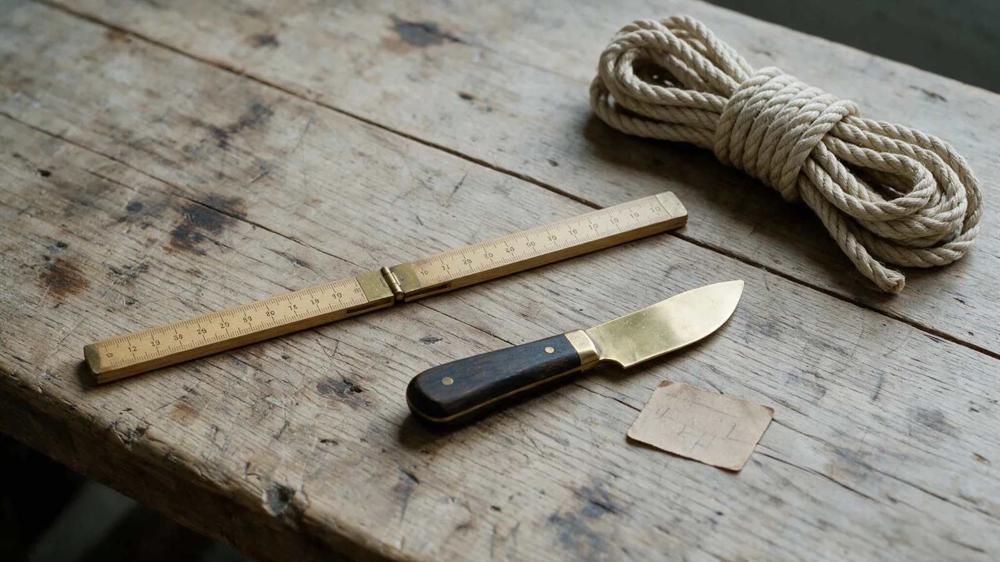

Every construction we cut
Five is the whole range. Other diameters are cut to order at the counter against the certificate for the coil they come off.

Five constructions. Tell us how long you need it and we cut it off the coil, the breaking load beside each one is the batch we will cut from.
Five is the whole range. Other diameters are cut to order at the counter against the certificate for the coil they come off.